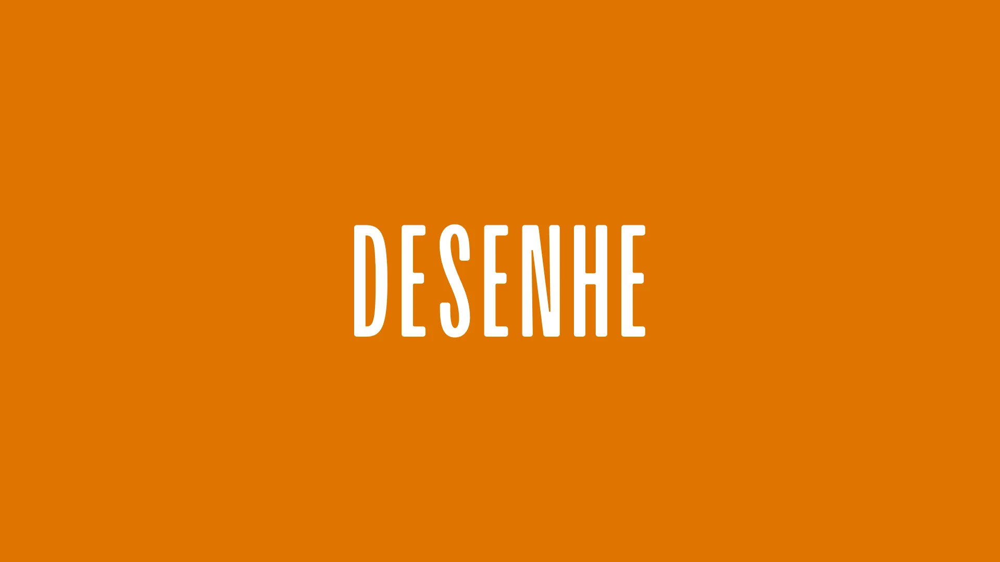
Desenhe
A school of tradition that never grew old.
Brand manual and website for Desenhe, a drawing and painting school in Curitiba, Brazil, teaching art since 1988. The identity starts from the word itself: a condensed logo with rounded terminals, a family of oranges, a typewriter face for headlines and a version for every moment, from the stamp seal to the freehand signature.
Visit site ↗More than a set of visual rules, the manual documents Desenhe's choices: who it is, what it believes in, who it talks to and how. The idea is that, on a card, a certificate, Instagram or the school's front door, people feel it is always the same Desenhe speaking.
The logo is, above all, a word: DESENHE. The skeleton is condensed and functional, and the rounded terminals make it human and contemporary, a translation of a school of tradition that never grew old. There is no separate symbol: the typography itself carries the personality.
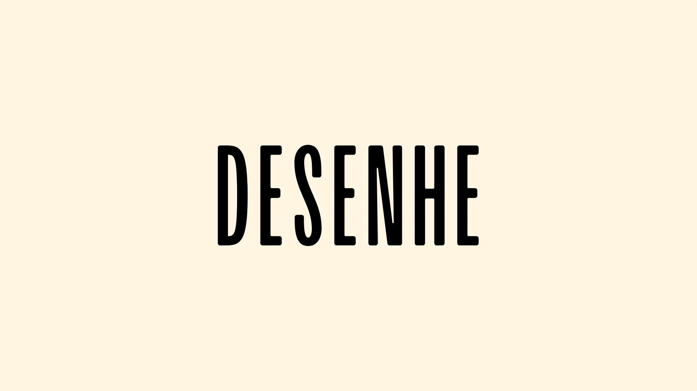
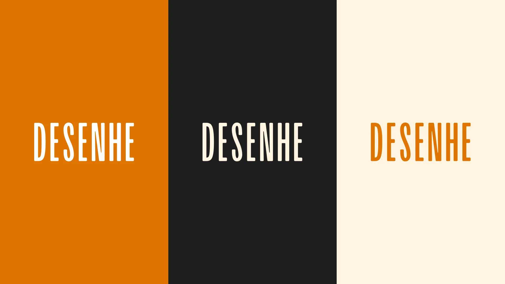
Besides the primary logo, the brand has a version for every moment: the box logo, with the most impact, for products and social media; the DSN monogram, for the smallest spaces; the seal and the tagline lockup, which carry the memory of 1988; and a freehand signature, loose and human.
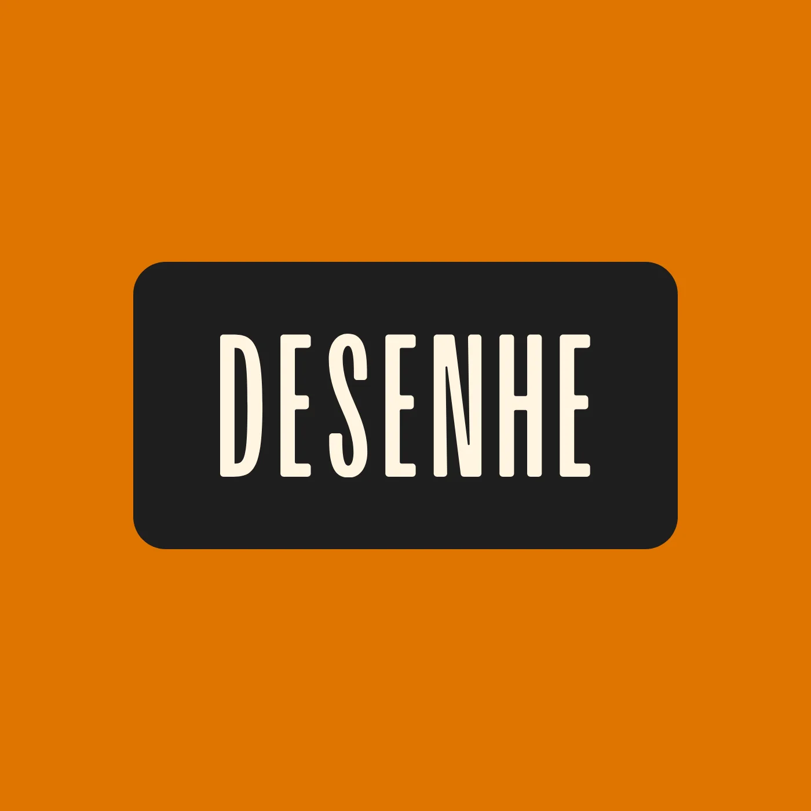
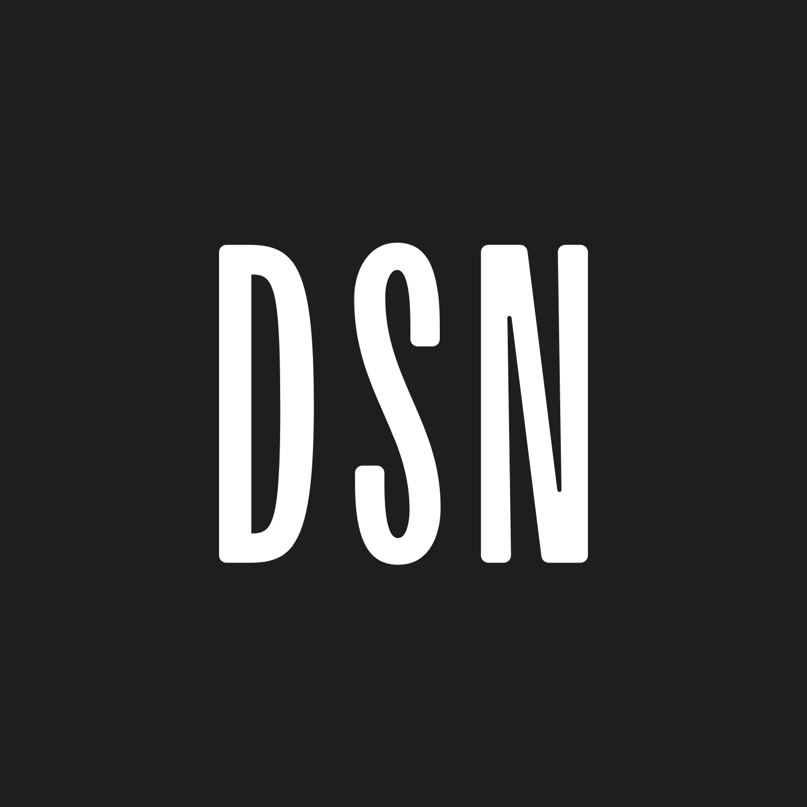
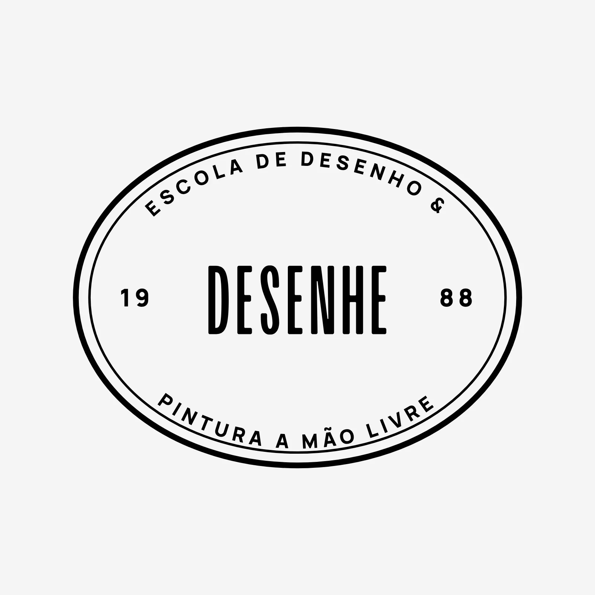
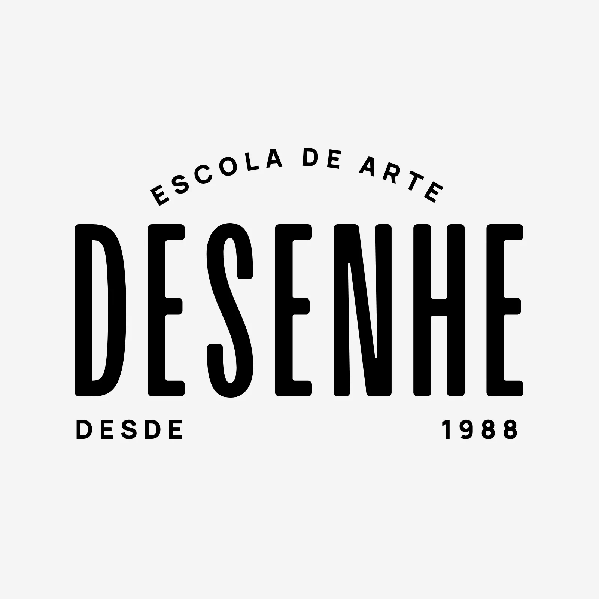
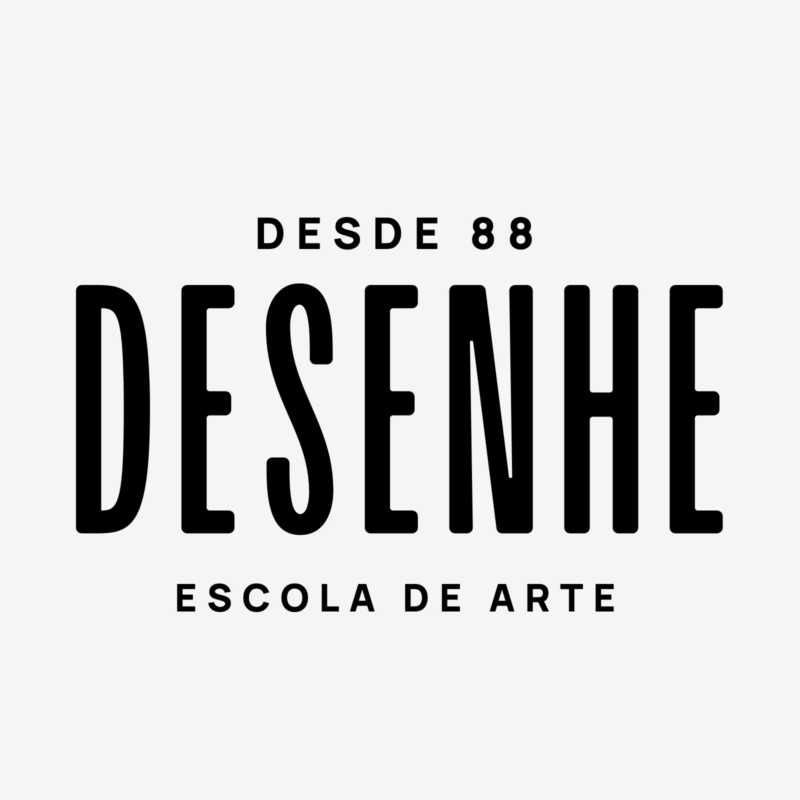
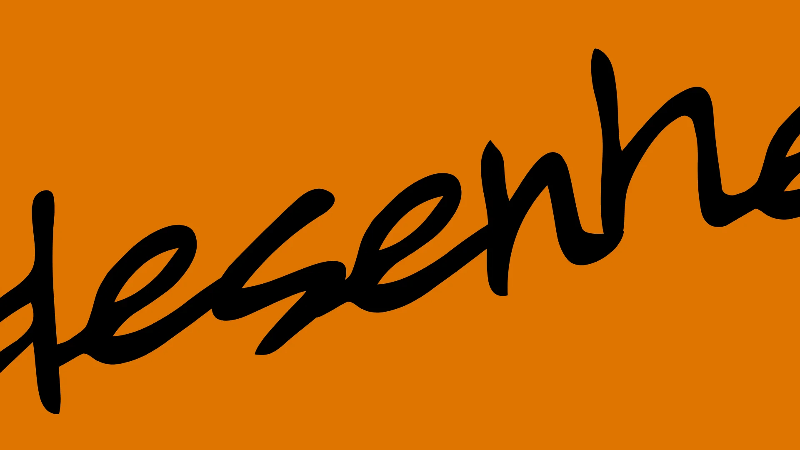
The palette is born from the gesture of painting. Orange is the heart of the brand, the color of energy, warmth and fresh paint, running from the lightest tone to the warmest and the terracotta. Around it, the neutrals give base and balance: beige brings the memory of paper and the studio, coffee ties the palette to wood and the matter of making by hand.
- Desenhe#DF7400
- Web#F67800
- Warm#D55415
- Terracotta#A3471A
- Red#CD3E28
- Yellow#F6A12B
- Beige#FFF4E0
- Coffee#552A15
- Charcoal#1E1E1E
- Black#000000
- Turquoise#6BAAA1
Two families accompany the logo: Courier Prime, a typewriter face, for headlines and highlights, and Manrope, clean and legible, for text and interfaces. The logo letters are custom, drawn only for it, and must always come from the original file, never be retyped.
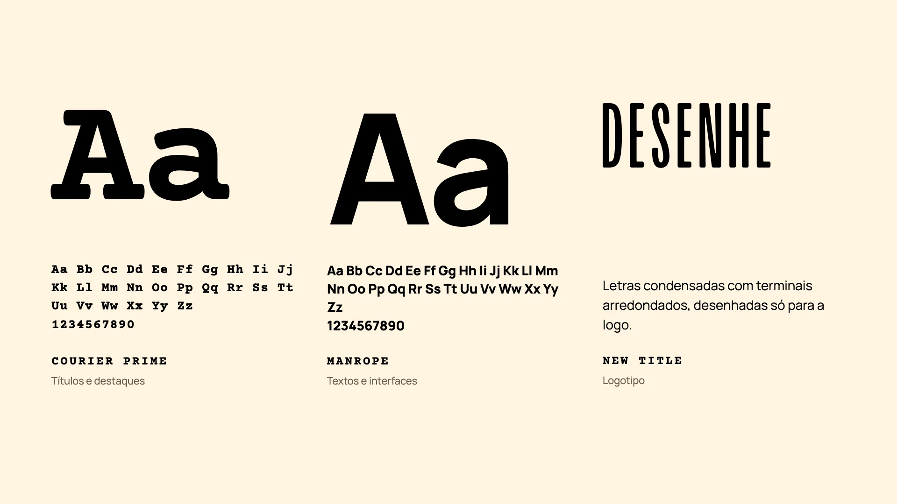
The identity reaches paper. The business card carries an illustrated brush and pencil on orange, with the contact and a QR code on the back, and the course completion certificate, in cream, has a watercolor on top and the school's stamp.
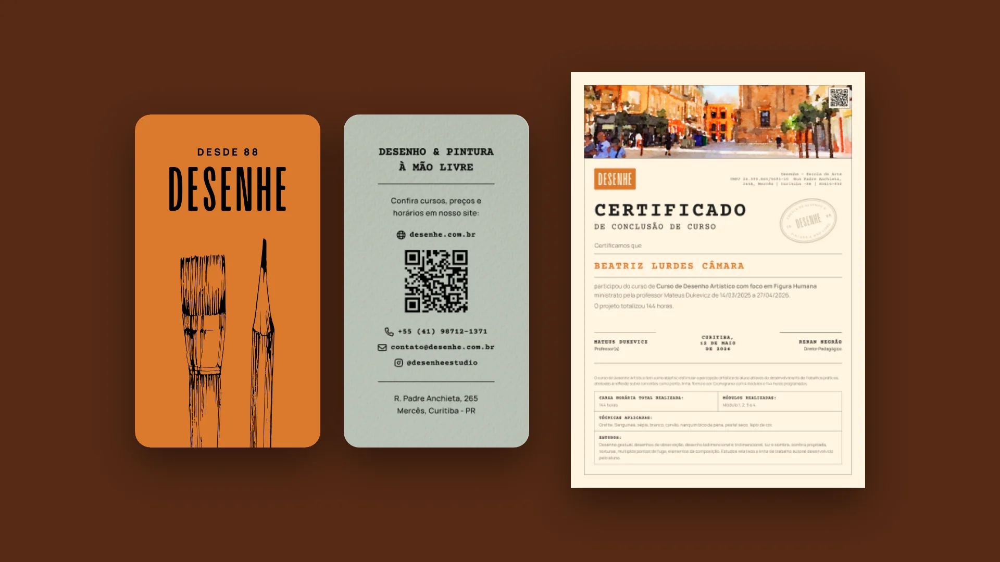
The website takes the identity to digital: the typewriter in headlines, orange in buttons and highlights and a dark base that keeps the school's photos in the foreground. From courses to the space, from testimonials to the footer, where each visitor can leave a drawing.
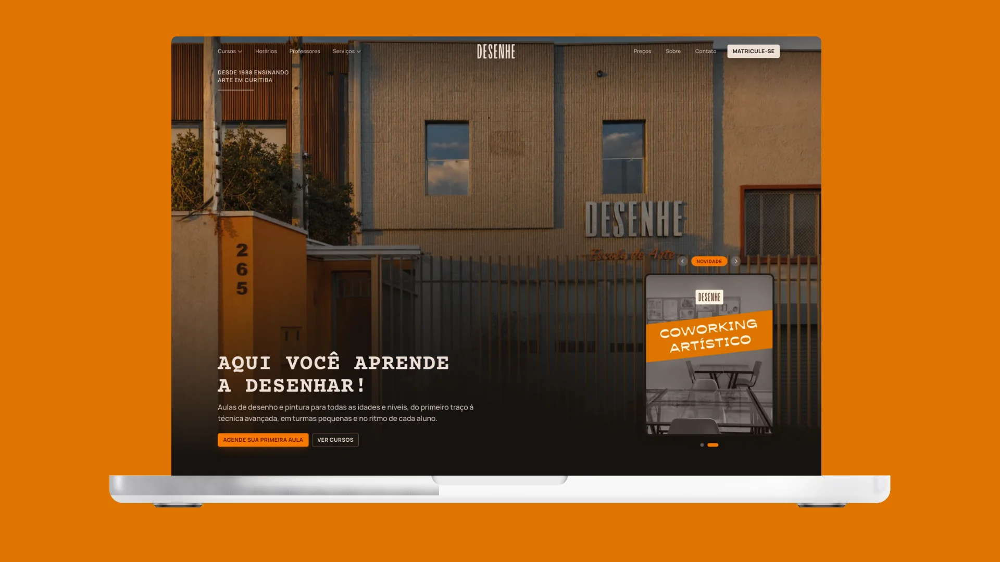
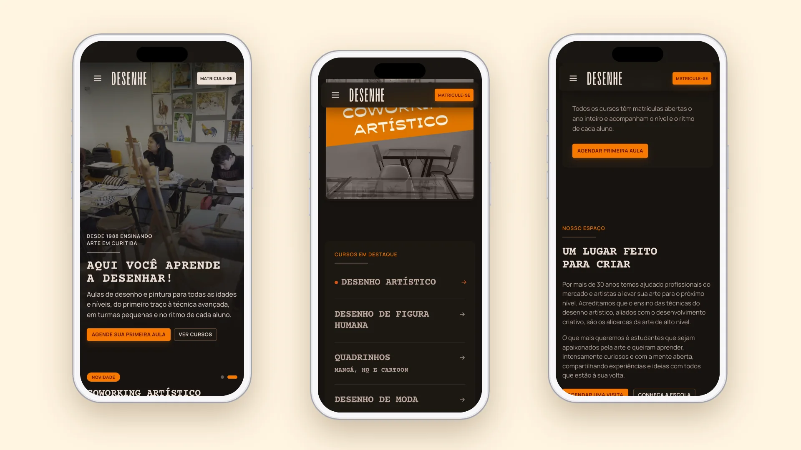
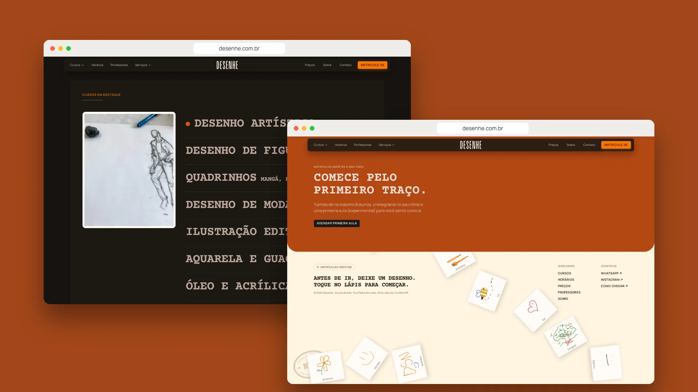
- Design and website
- Nícolas de Queiróz